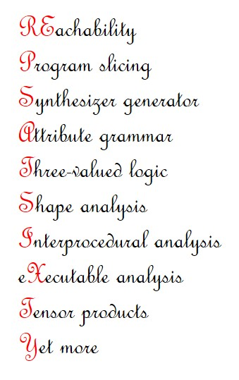

|  |
We will be holding a one-day event celebrating Tom Reps’ sixtieth birthday, in honor of his numerous contributions to the field of Programming Languages,
especially in the discipline of Static Program Analysis. It will be held on September 11th at Edinburgh, UK, co-located with the 23rd Static Analysis Symposium (SAS).
The event will consist of a collection of invited talks.
All are welcome. Please contact the organizers for more information or suggestions. Preliminary list of speakers
Organizers
|